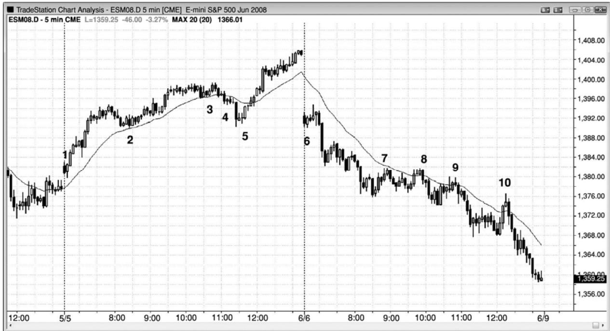
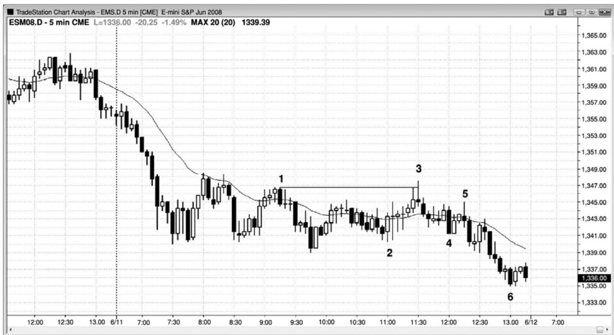
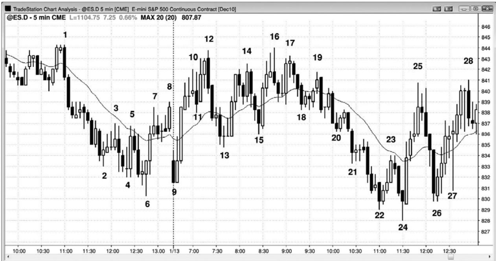

第15章 一天中形成突破和反转的关键转折时间¶
第 15 章 一天中形成突破和反转的关键转折时间
在太平洋标准时间上午 7:00 和 7:30 的经济报告前后，太平洋标准时间上午 11:30，市场常常形成突破或反转，太平洋标准时间上午 11:00 和正午，不常出现突破和反转。在强趋势日，经常出现很强的逆势恐慌运动，将人们吓出他们的头寸，这通常发生在上午 11:00 和11:30 之间，不过也可能略早或略晚。一旦你显然是被一波强逆势运动而愚弄，趋势通常会经历较长一段路程，返回它原来的极点，你和其他被套出的贪婪的交易者们将会追逐它，使它的幅度越来越大。什么导致了这种运动呢？机构从迅猛的逆势尖峰中受益，因为那允许他们在好很多的价位加仓，预期趋势恢复，进入收盘。假如你是一位希望在收盘前吃货的机构交易员，你希望在非常好的价位入场，那么你会制造某种谣传，或者为某种谣传推波助澜，导致短暂的恐慌，猎杀止损，暂时令市场快速超越某个关键价位。无论什么谣传或新闻，无论是否是一些机构散播它赚钱，都不重要。重要的是那种止损猎杀给那些明白其中就里的交易者们一个机会，使他们能够依附机构，利用失败的趋势反转赚钱。
止损猎杀通常会突破重要趋势线，所以向新极点的运动（趋势线突破之后的一个更高高点或更低低点）提示聪明的交易者们在第二天的第一个小时内寻找一笔反向交易。
这种类型的陷阱在交易区间日也很常见，市场已经在看起来是初期突破内一个极点附近盘桓了几个小时，突然迅速运动至另一极点，这种反向突破常常在太平洋标准时间上午11:30左右失败。这把预期向一个方向突破而提早建仓的交易者们套出场外，把预期向另一个方向突破的新突破型交易者们套入场内。大部分交易区间日都在中部某个价位收盘。

在图 15.1 中，有两个 20 缺口棒架构形成于迟到的止损猎杀。棒 5 是太平洋标准时间上午 11:25 止损猎杀后的入场，它也是均线缺口架构的一个二次入场（一个第二均线缺口棒做多架构，形成于棒 4 空头尖峰后面一棒上方的第一入场之后）。注意那条空头趋势棒有多强，它拥有一个很大的实体，而且收盘靠近低点。这条空头突破棒使得弱手们认为市场已经反转进入空头趋势。聪明的交易者们把这看作一个很棒的买进机会，预期它成为一个耗尽型卖出高潮和一个失败的突破。这种类型的止损猎杀通常会突破重要趋势线，由于之后通常会形成新的趋势极点，所以它常常是为第二天第一小时内的反向交易搭建平台（这里是多头趋势线突破后的一个更高高点）。它与多头通道起点棒 2 形成一个双重底多头旗形。
P137
在两个交易日，均线缺口逆势架构都形成于对均线的两次或多次测试之后。在逆势交易者们能够多次把市场拉回均线之后，他们下注时越来越自信，结束形成一条超越均线的缺口棒。不过，第一次这样对均线的突破超越通常失败，提供一个很棒的反向交易机会，预期趋势恢复。
第一天，市场在上午 7 点努力向下反转，估计是一份报告引起的。由于在那一点当天仍是一轮开盘起多头趋势，所以那个单棒下跌是开盘起趋势中的第一次回撤，所以是一个买进架构。失败的反转之后是一个三棒多头尖峰，然后是一条通道。
第二天，上午 7 点的反转成功，成为一个三棒空头尖峰，然后是一条空头通道。
Created with TradeStation
第二天，市场在中午努力从一个最终空头旗形向上反转，但是反转在棒 10 均线缺口做空架构处失败。

图 15.2 中，开盘后形成一轮空头趋势，然后向上反弹，却未能超越均线，交易者们预期太平洋标准时间上午 11:30 形成多头陷阱，它今天出现得非常准时。棒 3 也是空头趋势中的第一条均线缺口棒。通常，陷阱是很强的逆势腿形，令充满希望的多头积极买进，只是当市场快速向下反转时迫使他们清算出场。不过今天从棒 2 开始的反弹包含大型重叠十字星，表明交易者们在两个方向上都局促不安。如果不能令人相信，那怎么能够令交易者们被套呢？嗯，棒 3 前一棒试图形成一个双重顶空头旗形，而棒 3 超越了棒 1 高点，破坏了那个形态。这使得很多交易者放弃自己的空头交易，被迫了结，突破时把一些多头套入多头交易。突破前的动能很弱，所以可能没有太多被套的多头。不过，市场未能与棒 1 形成一个完美的双重顶，把一些空头套出场外。由于它是一个陷阱，所以当那些被套出的空头被迫在更低价位做空，追逐市场下跌，那些被套的多头不得不抛出他们的多头头寸时，为下跌增添了燃料。从棒 3 开始的下跌腿的病弱，与从棒 2 开始的上涨腿的疲弱是一致的，结果不出所料——当天市场收低。这是一个空头趋势恢复日，但是由于恢复开始的比较晚，而且之前是一段具有强双向交易的紧凑交易区间（大型、重叠棒线，带有很长的尾线），结果形成的腿形比开盘下跌腿形要小。

P138
在交易区间日，太平洋标准时间上午 11:30 也常常出现陷阱（见图 15.3）。这里，市场在日区间的上半部分花了几个小时之后，市场快速跌穿当日低点，把多头套出，新的空头套入。在上午 11:35 那一棒，市场在棒 24 上方给出一个二次入场高点 2 做多架构。市场两次尝试向下突破当日低点棒 9，均告失败，所以很可能向相反的方向运动。大部分交易区间日都在中部某个价位收盘。
当天开盘从第一棒起形成一轮多头趋势，然后回撤至上午7:00形成的信号棒棒10下方，那也可能是由某种报告引起的。由于出现三条尾线突出的横向棒线，所以这代表着一个小型交易区间，在它上方买进是风险比较高的。于是市场在报告时暂时向下突破，把空头套入，然后向上突破超越棒 11，把多头套入，空头套出；然后在棒 12 第二次向下反转。当出现被套的多头和空头，套入或套出时，下个信号通常不错，至少可以做刮头皮。
这张图表的更深入讨论
图15.3中，进入昨日收盘的反弹是一个从楔形底开始的向上反转，很可能至少包含两条腿。棒 9 处的更高低点向上反转，足够接近一个双重底，太平洋标准时间上午 7:40 棒 13 处的那个更高低点是一个双重底回撤。由于从开盘开始的反弹是一个很强的上涨尖峰，所以回撤之后市场很可能会努力形成一条通道，但是在棒 12 与棒 1 形成双重顶后，形成通道的尝试失败。下一小时形成了几个空头尖峰，最后形成一条空头通道，于上午 11:30 在棒 24 向上反转。上午 11:00，棒 22 反转尝试失败。市场处于一条极为陡峭的空头通道内，所以对该通道的第一次突破很可能引起一波突破回撤和一个更高胜率的多头架构，棒 24 便是信号棒。它还是从当天一个新的低点二次尝试向上反转。
截止棒 12 的上推制造了一个楔形空头旗形，棒 5 和棒 8 是头两次上推。棒 11 突破从棒9开始的紧凑多头通道时，市场的上涨趋势太陡，不能做空，但是在市场向棒12更高高点突破回撤时做空是合理的。等待棒 12 外包下跌棒收盘要更为安全，看空方是否能够控制那一棒。那一棒收低，确认了空方的力量，所以在它下方坚持到底运动的起点做空是一个不错的入场。